Dra. Camila Deneka
CRM 26021 · Diretora clínica
OrtopediaCirurgia da mãoMão pediátrica
O Centro Médico Trinità reúne especialistas em ortopedia, cirurgia da mão, geriatria, medicina da dor, cirurgia vascular, reumatologia e clínica geral — com atenção, empatia, profissionalismo e respeito ao paciente, no coração do Bigorrilho.
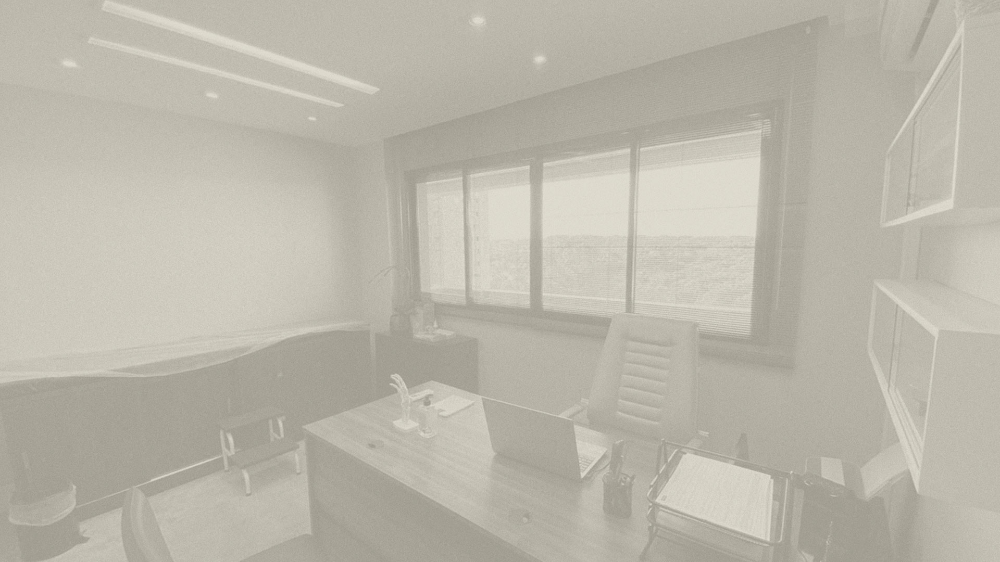
Rua Padre Anchieta, 2540 — salas 1003 e 1004, Bigorrilho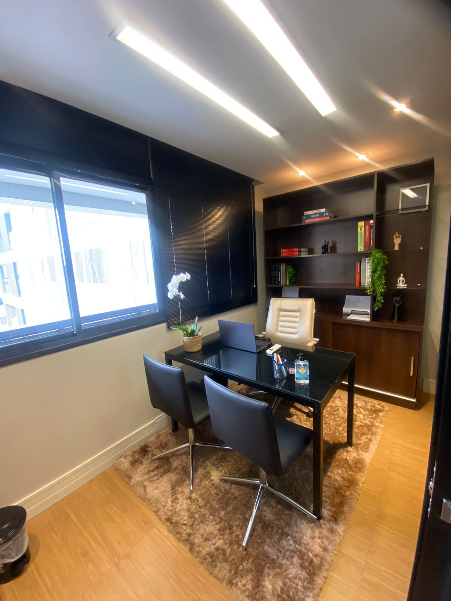
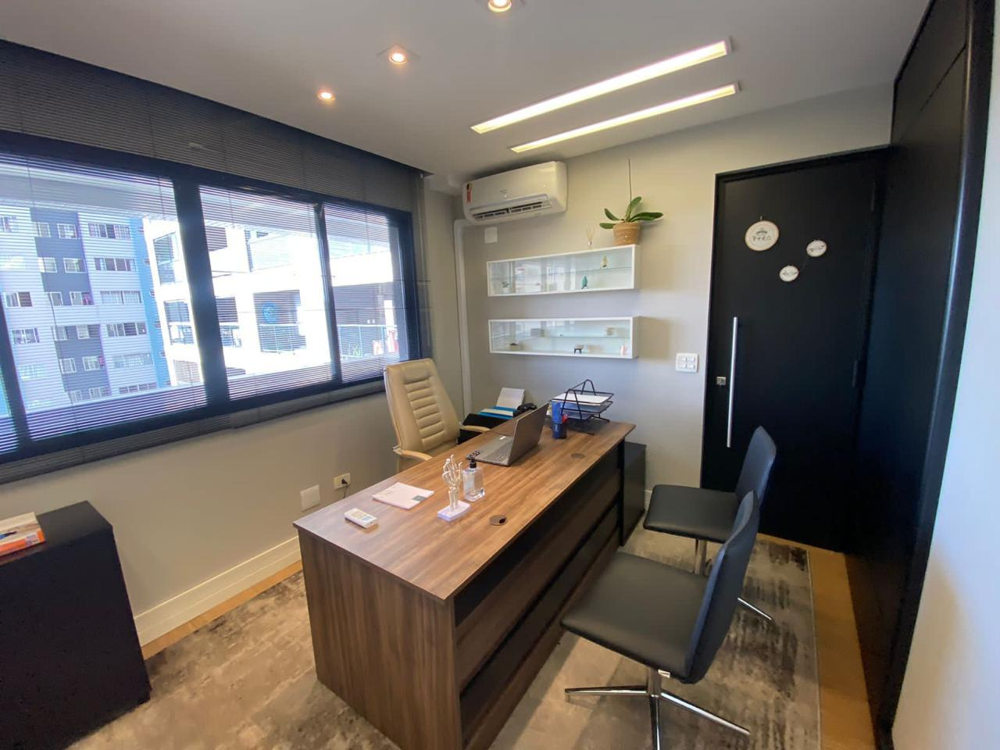
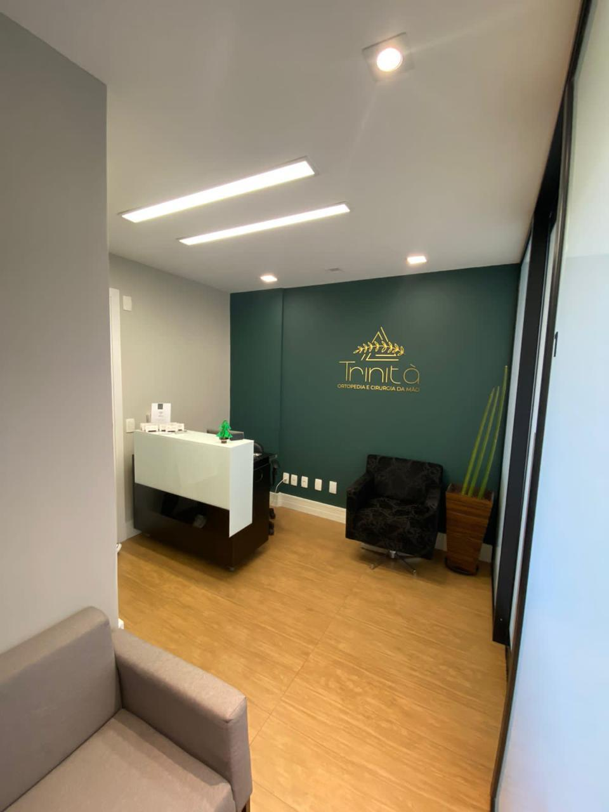
O Centro Médico Trinità é formado por médicos especialistas em diversas áreas da ortopedia, cirurgia da mão, geriatria, medicina da dor, cirurgia vascular, reumatologia e clínica geral. Um lugar sonhado e planejado para dar o melhor atendimento, com mais comodidade e praticidade para sua consulta, no coração do bairro Bigorrilho, com fácil acesso.
Encaminhamos você diretamente ao profissional certo para o seu caso.
A Clínica Trinità é formada por médicos especialistas em diversas áreas da ortopedia, cirurgia da mão e geriatria.
CRM 26021 · Diretora clínica
CRM 34850
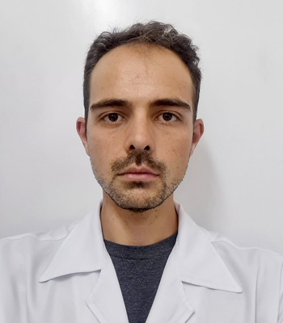
CRM 32129
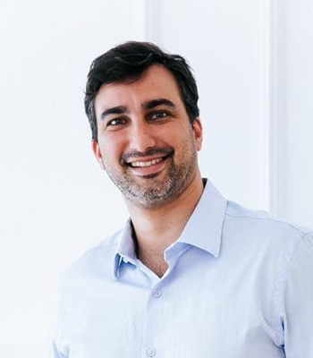
CRM 29460
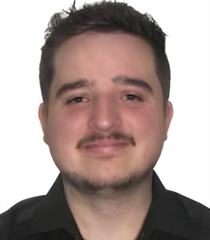
CRM-PR 40176 · RQE 32035
CRM 37210
CRM-PR 42589 · RQE 34335
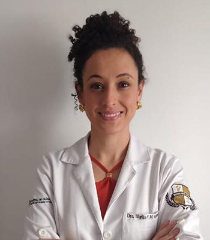
CRM 37468
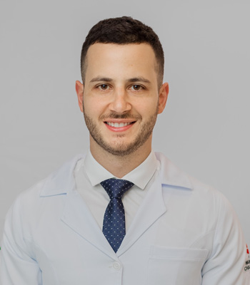
CRM 35265
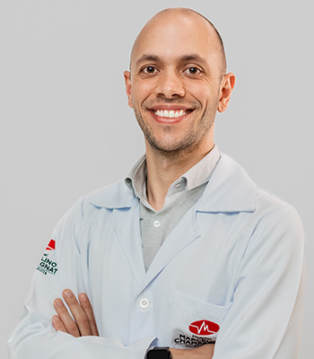
CRM-PR 41583
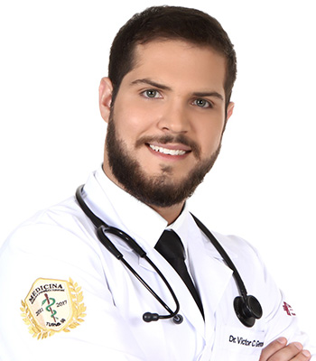
CRM-PR 038043
Todos os profissionais listados possuem registro ativo no Conselho Regional de Medicina do Paraná (CRM-PR). Consulte disponibilidade, convênios e valores de cada especialista diretamente no perfil da clínica no Doctoralia antes de agendar.